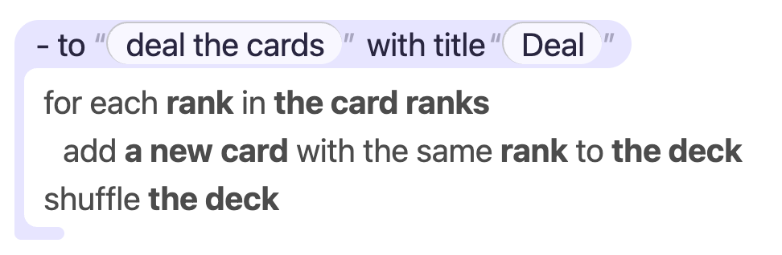
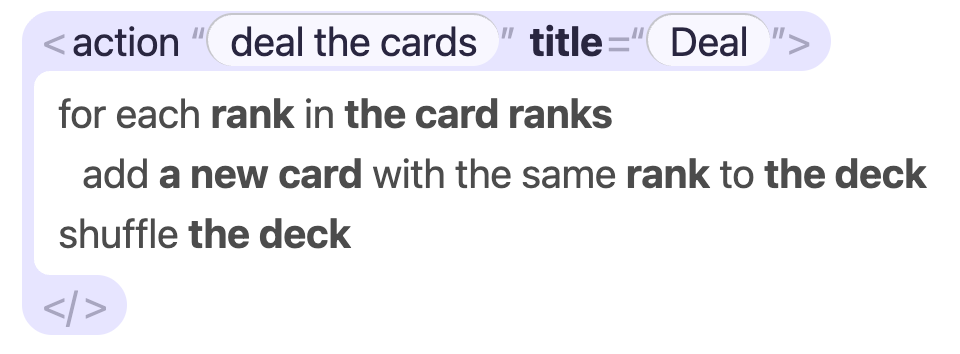

Tags or Plain Spell
Should code be written as tags (<property "color" ...>) or as plain Spell (its "color" is ...)? And can plain Spell show what a person typed, as bubbles, without the tags?
language -- how Spell reads and writes, in English and Spanish..spell and P41 shortened the tags. Three more phases about tag
attributes were planned (P42-P44). Then you asked whether plain Spell, shown the right way, would be
easier than tags.
-
Code is plain Spell; documents keep tags. Pages, sites and property editors stay tags, because
they are mostly markup and prose. Code inside a document sits in a
<spell>block, as code sits in a fenced block in Markdown. - The editor draws your picture (1.1) over plain Spell, from what the parse already knows: each declaration's head on a band with what you typed in pills, its body in a bracket, the things the body refers to in bold. The picture itself is plain Spell, with no tags.
- Plain code parses 9-25% faster here, and P42 and most of P43 are no longer needed.
The tag form came from epic elemental-spell. Its overview gave four reasons, and each still
holds for some files and not others.
| Why tags, as elemental-spell said it | Does plain Spell give it? |
|---|---|
| "A novice who knows a little HTML can read it: each chunk says what it is in its tag." |
Partly. Plain Spell says what each line is in words (its "color" is one of ...),
which reads aloud. Someone who knows HTML loses the familiar look.
|
| "A notebook editor can show it: the markdown between tags is a prose cell, each tag a code cell." |
Yes, for documents. A page keeps its tags and prose; its code goes in <spell>
blocks, which compile today (checked).
|
"Each kind of chunk can get its own editor: a property's tag fits a
<ui-property>."
|
Yes. Every plain line that declares something already says what it declares, with its exact place in the file (the parse's declarations), which is what such an editor needs. |
"An agent can walk the chunks, and find one by a selector: property[name=color]."
|
Yes, through the language server's outline (card › color). A plain line is also easy
to find by its words, as the parser's own first pass already does.
|
Your two pictures, 2026-11-10: on the left "this is the look that I'm after", in plain Spell; on the right "what I had come up with for the spellml", the same look on the tag form.


on the same band, its marks faint, the same body, and a closing tab at the bottom' width="480" />-
The head line,
- to "deal the cards" with title "Deal"on the left and<action "deal the cards" title="Deal">on the right, sits on a pale lavender band with rounded ends. The tag form's marks (<,=",">) are faint, its attribute name title bold, and its closer</>is a rounded tab of its own under the bracket. -
Each part the person typed,
deal the cardsandDeal, is a white pill inside the band. Its quote marks, which the source has, are drawn faint just outside the pill. -
Spell's own words on the head (
- to,with title) are plain text on the band. - The body sits inside a lavender bracket: down the left side, turning along the bottom.
-
The body's words are plain. What they refer to is bold: rank, the card ranks,
a new card, the deck. The verbs and little words (
for each,in,add,with the same,to,shuffle) are regular weight. - You're still deciding whether the
for eachline should get a band of its own (Q5).
What each costs a reader, once drawn:
| Plain Spell | Tags | |
|---|---|---|
| Spell's words on the head | - to, with title: read aloud as a sentence |
action, title: two labels, not a sentence |
| Marks drawn faint | the quotes around the two pills |
the same quotes, plus <, =", "> and a closing
</>
|
| Lines | 4: the head, 3 steps | 5: the closer is a line of its own |
| The body | the same in both: plain words, references bold | |
-
Undrawn text. GitHub, a diff, a chat, a terminal, an agent's prompt, a README: there every
<,="and</>is full strength, and plain Spell still reads as English. -
Typing it.
- to deal the cardsversus<action "deal the cards" title="Deal">and a closer to match; a closer left out is a mistake only the tag form can make. - One form or two. Every new line Spell learns needs a tag and attributes too (P42-P44 are that work), and every tool learns both.
- Speed. Plain parses 9-25% faster on code (section 4).
- Where tags still fit. Pages, sites and property editors are mostly markup and prose, so tags stay natural there, whatever is chosen for code.
-
Two small differences between the left picture and today's plain Spell: an action's name isn't quoted
(
- to deal the cards:), and its title is a line of its own under it (- titled "Deal"). Q6 asks whether the head line should take the picture's form.
Real files from the built-in projects. The plain form is what Spell's own writer makes from the tag file, so each pair compiles to the same program (checked; one exception in 2.6).
- Every plain line reads aloud as a sentence. The tag lines read as markup with English inside.
- The plain form needs no closers: indentation says where a property's lines end.
- A description moves from
description="..."to a//line above it.
-
The tag form already falls back to plain Spell for a line with no tag of its own (
<spell> - it lives in task files </spell>): 25 of the 33 data files have such blocks since P40. - This is the kind of file P40 turned from plain into tags.
-
In Spanish the attribute names are the hard part:
uno-de=today, and P42-P43 would addes-uno-de=,empezando-en=,es-un=. - The plain lines are ordinary Spanish sentences.
Here the tag form earns its keep: the prose is the point, and the code is the example.
-
Plain Spell alone would turn every prose line into a
//comment (that's what Spell's writer does today): the guide would read as code with notes, not as a page. -
The fenced form compiles today: I checked a file of prose with two
<spell>blocks declaring a thing and an app. - 5 guides are like this; their prose would need small rewording, as it teaches the tag words.
-
A page is markup either way. Plain Spell only adds a wrapper (two lines), deeper indentation, and the
full
ui-names and closers. -
It also loses the
notebookflag (the editor's in-place page): Spell's writer has no plain line for it today. - So pages are where tags are plainly better. 388 of the 393 guide files are pages like this.
I compiled six example projects both ways and compared the programs, ignoring positions and comments.
| Project | Same program? |
|---|---|
| Counter, FizzBuzz | Identical |
| Solitaire, Solitario, Task List | Identical, but a comment's spacing and the test folder's name |
| Recipe Box |
No: a <for> with loading / empty / failed parts, inside an element, is only
read in a tag file. In plain Spell it comes out as a plain element.
|
Three drawing shortcuts work only in tag files today:
- a Spell UI element by its bare name,
<text>for<ui-text> </>closing any element- a
<for>inside another element (the Recipe Box case)
Question 4 asks whether plain Spell's drawings should get them too.
Thinking of someone who has never programmed, copying an example and changing it.
| Tags | Plain Spell | |
|---|---|---|
| Symbols to learn |
< > /> </> = " ", and soon ' inside quotes and
{ }
for some values
|
" around a new name, : before indented lines, - for a
member
|
| Words to learn |
tag words (property, alias, action) AND attribute names
(one-of, starting-at, is-a), each in Spanish too
|
the sentence itself: its "x" is one of ..., to throw it away:
|
| One fact, written out | <property "count" is="a number" starting-at="0" /> (after P42) |
- its "count" is a number starting at 0 |
| Rules about the writing itself | P42-P44 add: which attributes take Spell in quotes, which take text, when braces are needed, single quotes for text inside quotes, which attribute comes first | none of these |
| Reading it aloud, or to someone | reads as markup | reads as English (or Spanish) |
| Someone who knows HTML | familiar at once | new, but short |
| Seeing what they typed vs Spell's words | quotes mark it, among lots of punctuation | quotes mark new names only; values and picks need the editor's bubbles (section 5) |
| Prose between the code | first-class: plain text between tags |
// comments, unless it's a document with <spell> blocks (option A)
|
| Where a block ends |
a closer, </property> or </>, which is easy to forget or
mismatch
|
indentation, which is easy to get wrong when pasting |
| Copying a line between files | a tag line pasted into a plain file, or the reverse, doesn't read (a file's shape comes from its text since P40) | every code file is the same shape |
| What Spell says back | hovers, outlines and the "Show as Spell" view already speak in plain lines | the same form everywhere |
| Parsed in this process, median of 7 | Tags | Plain | Change |
|---|---|---|---|
| Solitaire | 190 ms | 168 ms | -12% |
| Solitario | 250 ms | 227 ms | -9% |
| Task List | 99 ms | 89 ms | -10% |
| Recipe Box (see 2.6) | 40 ms | 30 ms | -25% |
| 15 guide pages, each alone | 624 ms | 405 ms | -35% |
| Built-in files in tags today | Files | Lines, tags → plain | Characters, tags → plain |
|---|---|---|---|
| code: views, things, apps, places | 89 | 7,422 → 6,700 | 255,925 → 240,246 (-6%) |
| guides (pages, and 5 with code) | 393 | 51,230 → 50,177 | 1,701,450 → 1,897,498 (+12%) |
| other pages | 3 | 608 → 581 | 23,704 → 24,281 |
| property editors | 2 | 32 → 28 | 1,391 → 1,348 |
- Lines count non-blank lines; characters leave out spaces and tabs.
- Pages grow in plain Spell from the full
ui-names and named closers. - Timings are one machine, warm, the same files each way.
A tag line is read as its plain twin: each tag has a plain line it stands for, in each language. So every tag feature is two features.
- About 5,600 lines of code exist only for tags: their reader, their twins, the chunk tree, and the writers each way.
- Each new kind of line needs a tag, its attributes and its twin, in English and Spanish.
- P42-P44 are three phases (13-18 hours) of attribute design alone: quotes or braces, single quotes inside, attributes by type.
- Translate, place ingest, the convert and rename commands, the grammars and the editor all handle both forms.
- The notebook page editor works from the chunk tree: prose cells, examples, sections, a page's own views. Pages keep this under every option but B.
- Changing one fact is setting one attribute (how the lock and notebook flags are set today). In plain Spell it's rewriting one line, which the parse already knows the place of.
-
Finding things without the parser: the Inspector finds a template by its tag with a pattern.
Plain Spell's declarations are found by a pattern too (
a "x" is a ...): the parser's own first pass does it. - An agent gets a tree either way: the chunk tree for tags, the outline for plain Spell.
The parse already knows, word by word, what each part of a line is. It sends that to the editor today, for colouring. Bubbles are a different way to draw the same knowledge.
Everything in the picture is already worked out by every parse; most of it already reaches the editor, as the language server's word kinds and its outline. The gaps are at the bottom.
| In the picture | What it is | How the parse knows it |
|---|---|---|
| The band | the head line of anything that declares something: a type, a property, an action, an event, a place |
the rule's declares, which the outline already sends with the line and the whole
range of the thing (the action rule is
to {signature:method_signature} :? {statement_body}?)
|
| A white pill |
a part the person typed on that line: the name they made up (deal the cards), and
any text or number ("Deal", 0)
|
the name's words carry the declaration mark (an action's name is its whole
signature, DECLARED_AS); texts and numbers are string and
number words
|
| Faint quotes | around a pill, only where the file has quotes |
a quoted name or text (its "color", "Deal") has its quotes in the file,
drawn faint; an unquoted value (ace, 2 ... 10, red) is a
pill with no quote marks. Nothing is drawn that the source doesn't say (Owen, 2026-11-10).
|
| The bracket | the lines of its body | the same outline range, from the head's next line to its last |
| Bold | what a step refers to: rank, the card ranks, a new card, the deck |
variable, property, parameter and type words
without the declaration mark
|
| Regular weight |
Spell's own words: for each, in, add, to,
shuffle
|
keywords, and the words of a rule's own syntax |
What's missing to draw it exactly:
-
The article with its name. The picture bolds the deck and a new card whole, but
the editor gets one kind per word, and
theanda newcome as Spell's words. The parse knows the whole reference (aknown_variablematch includes itsthe), so the server would send the reference's span, not just its words. -
A list's values where they're declared (
is one of red, black): whether they arrive as values, so they get pills, needs checking. -
A place's kind (
data folder) has no word kind; in the picture's look that's fine, since Spell's words stay plain on the band. -
Which lines get a band: the outline lists declarations; a control line (
for each,if) isn't one. If Q5 gives them bands, the server marks them too.
Real lines from the built-in projects, drawn by your picture's rules. Plain HTML here, its look in one
sheet beside this page, bubbly.css, shared with the whole card's
page: its settings at the top (--bub-thing, --bub-pill-pad,
--bub-quote-gap, --bub-gutter ...) tune both at once. In the editor each part
would come from the parse, as you type.
Solitaire's whole card, every line, both ways: Card, Drawn Bubbly, which takes your comments on each block.
- A band for a line that declares something, in its part of speech's colour (repo-split's): things purple; actions, events and drawings green; properties and aliases amber; groups, settings and the rest grey. A bracket down its body, its top-left square under the band; a foot under the bracket.
-
A pill for what a person typed: a name, a value, a text. Faint quote marks only where the
source has quotes (
its "rank");ace,2 ... 10andredhave none, as the source has none. -
Bold for the things a line refers to (
the deck,its rank's rank). Neverit,itsorthem: those are Spell's words. - A pill never wraps; a long line scrolls sideways, as code does.
Your picture, rebuilt in HTML: the calibration
deal the cardswith title
Deal
A card: Solitaire's Card.spell, its plain twin
cardis a two sided view:
rankis one of ace, 2 ... 10, jack, queen, king
is a (rank)
valueis the position of its rank
is a face cardif its rank is jack, queen or king
coloris one of red, black:
An app that draws: the Counter example, whole
counteris a view:
countis a number starting at 0
counteris a new counter
An action with its title, icon and key: Solitaire's Restart
Restart
redo
-
Its settings (
- titled,- icon) aren't declarations, so no band; their quoted texts are still pills.Nhas no quotes in the source, so it stays a letter. -
With Q6's head line it would read
- to "start a new game" with title "Restart", as your picture does.
Worked-out values: a card's name and its short state
nameis its rank +
of+ its suit
stateis:
-
On a head line a typed text is a pill (
" of ", its spaces kept). In steps, texts and numbers stay plain (Q3, A).
Places: Star Wars' Wikipedia, and a Task List keeper
https://en.wikipedia.org/api/rest_v1:
title
wikibase_item
/page/summary/{name}
tasks:
server keeperis a task keeper:
kept tasksis every server task
In Spanish: Solitario's Carta.es.spell
cartaes una vista reversible:
rangoes uno de as, 2 ... 10, jota, dama, rey
es un (rango)
es una figurasi su rango es jota, dama o rey
colores uno de rojo, negro:
Tags inside a drawing: Solitaire's toolbar and a Sign-Up Sheet list
game menuaria-label=
Gameshrinkable>
titlesize=
large>Klondike Solitaire</text>
right>Moves: {the moves} · Score: {the score}{the hint}</text>
Boardcolumns=
7context-menu=
game menu>
Reading the sheet>
nonecolor=
grey>Nobody yet: be the first.</text></empty>
red>We can't read the sheet right now.</text></failed>
-
A tag inside a drawing gets no band: it's markup, not a declaration. Its marks
(
<,=,{,/>) are faint, its name a shade of the band, its quoted values pills, the things in braces bold. A text between tags is plain. -
volunteerin<for volunteer in ...>is bold, as rank is in your picture'sfor each.
The other way to draw a tag in a drawing: its head on a small band
game menushrinkable>
title>Klondike Solitaire</text>
- Louder: a drawing full of tags becomes a column of bands. I'd keep the plain way above, and save bands for declarations.
A document stays tags: Spell UI's Getting Started guide page
getting startednotebook>
Descriptive Attributesdescription=
Combine variations …>
hugecolor=
primary>Button</button>
- The tag form's heads take your second picture's look: the marks faint, the attribute name (description) bold, the closer a tab under the bracket. The description is cut to fit here; the real one runs on.
-
The markup inside a document (
<markdown>,<button>) draws as tags inside a drawing do, above.
Epic repo-split drew the tag form this way in the editor, 2026-11-09 and 10, then shelved
it on your word. It's kept on a branch, spellx-blocks, commit bff9f92a3,
"spellx's tags drawn as coloured blocks in the code editor (SpellxBlocks), shelved".
- What it drew: each tag's head on a band in its kind's colour (things and views purple; actions, events, handlers and drawings green; properties, aliases and groups amber; the rest grey), its name and values in white pills, a rail of that colour down its body to its closer, and a drawing's markup the same way.
- The code in a body: plain, with names bold (a change to the theme's rules: variables, types and classes bold).
- How: Monaco decorations, styled in the editor's CSS, read from the file's text by the tag form's own tokenizer as you typed, not from the parse. 351 lines of code, 159 of CSS.
-
Your notes along the way (2026-11-10): "group goes with property, if and draw are actions, test
is grey, tags in draw should be drawn the same way. Note the inset mostly-opaque-white pill for
strings/numbers inside tags"; "remove the VSCode line drawn the side of blocks"; "I don't want to cut
off top-level tags at all"; "add padding to elements, such as before the < and surrounding
solitaire-- 8px horizontal padding". - Why it was shelved: your words were "I'm reconsidering how we do all of this drawing, can we back out the changes which color the tags/etc in a way we can bring it back easily later?" Nothing more is recorded about what you didn't like.
Likely reasons, read from the code, not from you:
- It drew only the tag form. Plain Spell got nothing.
- Four band colours by kind, where your picture has one.
- It read the tags, not their meaning: it knew where a tag was, not which words a step refers to, so its bold came from a theme rule.
- Much of the evening went on fighting the editor: a line drawn down the side, top-level bands cut off at the left, padding faked by spacing the first and last letters.
The same kind of drawing as repo-split's, but led by the parse: the language server says what each part is, and the editor only styles it. No guessing from the text.
-
The band: a decoration over the head line's text (
className), rounded at its ends; a head over two lines gets a band on each. -
A pill: a decoration over the typed part, drawn above the band. Quotes in the file are drawn
faint (
inlineClassName); a value with no quotes in the file gets none, as the source says. -
The bracket: a decoration on each body line (
isWholeLine), drawn as a left border at the head's indent, with the corner on the last line. -
Bold: from the word kinds the editor already gets: references bold, declarations not (their
declarationmark), Spell's words regular. - Where the parts come from: the outline (each declaration's line and range) and the word kinds, both already sent on every parse. New: the span of a whole reference, for the deck.
The honest limits:
- The editor draws each line on its own, so a band and its bracket are pieces that line up, not one shape; corners are drawn per piece.
- A long line that wraps breaks the band; Spell's editor doesn't wrap code today.
- The selection is drawn under the text, so a white pill can hide it; pills need to show through when selected.
- Between a keystroke and the next parse, the drawing is a moment behind; the editor keeps each piece on its text as it moves, so it rarely shows.
- VS Code takes decorations too, but with less control over rounded shapes: a close likeness, not the same.
-
On a page (a guide's code, a notebook, the Inspector): Spell's own colourer,
SP.SpellHighlighter, already marks each word's kind for<spell-code>. There the look is real HTML, one box per declaration, so it can match the picture exactly. - The tag form could take the same drawing (your right-hand picture). That helps in Spell's editor and on its pages, not on GitHub or in a chat.
| A · Code plain, documents tags | B · No tags | C · Both, as now | |
|---|---|---|---|
| 89 code files | back to plain Spell, by Spell's own writer; prose becomes // lines |
back to plain | stay tags |
| 393 guide files, 3 pages | stay tags; the 5 with code put it in <spell> blocks |
wrapped as x is a page: - to draw it:, +12% characters; prose has no plain home
|
stay tags |
| 2 property editors | stay tags | need a plain form | stay tags |
| P42 · Property Is | not needed | not needed | built, 5-7h |
| P43 · Attributes Read Like Spell | only at= on a site's pages, about 1h |
not needed | built, 3-4h |
| P44 · Drawing Attributes By Type | still wanted: drawings are markup in both forms, 5-7h | still wanted, 5-7h | built, 5-7h |
| P40 and P41 | one ending and short page tags stay; the 33 data files' place tags go back to plain lines | one ending stays; short tags only for old files | as built |
| New work | back to plain, 4-6h; the bubbles, 5-8h; drawing shortcuts in plain Spell, 3-4h | A's, plus every page and the notebook editor rebuilt on plain Spell: days | none beyond P42-P44 |
| From then on | new code features need no tag; tag code stays for pages | one form only | every feature twice, in tags and plain |
| Old tag code files (yours too) | keep reading, never written | keep reading, never written | as now |
- A reverses part of your examples rule of 2026-10-31 ("always spellml"), and P40's change to the 33 data files.
- Nothing is deleted under A: the tag reader stays for pages, and for old files.
Code (views, things, apps, places) can be written as tags or as plain Spell. Documents (guides, pages, sites, property editors) are mostly markup and prose. Which way should each go?
Your two pictures look nearly the same once drawn (1.1), so the drawing doesn't decide this. What does: how the text reads where it isn't drawn (GitHub, a chat, an agent), what's quicker to type, and keeping one form for code instead of two.
Code files are plain Spell; documents keep tags, their code in <spell> blocks.
Easiest to read, parses faster, and P42 and most of P43 drop.
- 89 code files go back to plain Spell; 5 guides fence their code.
- The examples rule becomes "plain Spell for code, tags for pages".
- P42 is dropped, P43 shrinks to
at=on a site's pages, P44 stays. - Spell's writers write plain for code: translate, place ingest, convert.
One form everywhere, but every page wraps its markup in a plain line, and prose loses its place.
- All of A, plus 396 pages rewritten and the notebook page editor rebuilt on plain Spell.
-
Pages grow by about 12%; loose prose and
##sections need a new plain form.
Nothing changes; P42-P44 are built as planned, and each new feature is written twice.
- P42-P44 go ahead, 13-18h.
- The bubbles could still come, drawn over tags.
The parse knows which words a person made up, which they typed as values, and which are Spell's. Where should that be drawn as bubbles?
Spell's editor and VS Code draw your picture on the code itself, from every parse: unlike repo-split's try (5.3), led by what the parse knows, and for plain Spell.
- A phase of its own, about 5-8h: the editor's drawing, VS Code's decorations, the word kinds' gaps.
- The code stays editable as text; the pills are only how it's drawn.
The notebook page and the Inspector draw pills; the code editor stays coloured text.
- Smaller, about 3-4h; people writing code see no bubbles.
Colours only, as today.
Which parts are drawn as pills? Your picture settles most of it: on a head line, what the person typed is a white pill; in the steps, what they refer to is bold. Left open: a value typed in a step, and Spell's own choices (see 5.2).
The name and any text or number typed on a head line are pills; in steps, references are bold and a
value (30, "Try again") stays text.
- The calmest look; a step reads as a sentence.
- One pill style, one band colour.
A text or number typed in a step gets a pill as well: show "Try again".
- Everything a person typed looks the same, wherever it is; busier steps.
As A, plus Spell's own choices on a head line (a number, two sided view,
data folder) as soft chips, which could later open a menu of the others.
- A place's kind needs a word kind of its own first (5.1).
Only tag files take <text> for <ui-text>,
</> as a closer, and a <for> inside another element. Should a
plain file's drawing take them too?
Drawings read the same in every file, and Recipe Box compiles the same either way.
-
About 3-4h; plain files can write
<text>instead of<ui-text>.
Plain files keep <ui-text> ... </ui-text>; the writer fills the names in.
In your picture, for each rank in the card ranks is a plain step, its own step indented
under it. Should for each, if / otherwise and
repeat get a band and a bracket of their own, like the action? You said you're still
thinking about this (2026-11-10).
Control lines are steps: plain words, references bold, their steps indented under them. Bands mark only what a person declares.
- A band always means "something you named"; a long action stays calm.
- Nesting shows by indent alone, as in the picture.
Each control line on a band, its steps in a bracket, as in a block editor: the shape of the logic shows at a glance.
-
Busier: a few nested
ifs give brackets inside brackets. Wants a second, lighter band colour, so a step doesn't look like a declaration. - The server marks control lines as well as declarations.
No band, but a thin bracket down the steps a control line holds: nesting shows, without a band.
- A middle way; the thin bracket replaces the editor's indent guides there.
Your picture writes - to "deal the cards" with title "Deal". Today's plain Spell writes
- to deal the cards:, with - titled "Deal" on a line under it. Should the
head line read like the picture?
The name may be quoted, and with title "..." may end the head line; the writers write
that form. Today's lines keep reading.
- The title sits on the band in a pill, next to the name, as drawn.
- A small language change: the action's line, in English and Spanish, and its writers; a few hours.
The editor draws faint quotes around the name anyway; the title stays a line of its own in the body.
- No language change; the title's line draws as a step, not on the band.